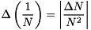

$$qf_commondoc_header.start$$ $$qf_commondoc_header.end$$
This plugin implements a 3D diffusion model for the fitting routines in QuickFit. The model may be denoted as:
$$bmath:G(\tau)=G_\infty+\frac{1}{N}\cdot X_{back}\cdot\left(\frac{1-\Theta_{non}+\Theta_{non}\mathrm{e}^{-\tau/\tau_{non}}-\Theta_{trip}+\Theta_{trip}\mathrm{e}^{-\tau/\tau_{trip}}}{1-\Theta_{non}-\Theta_{trip}}\right)\cdot\left[(1-\rho_2-\rho_3)\cdot g_1(\tau)+\rho_2\cdot g_2(\tau)+\rho_3\cdot g_3(\tau)\right] $$
with
$$bmath:g_i(\tau)=\left(1+\frac{4D_i\cdot\tau}{w_{xy}^2}\right)^{-1}\cdot\left(1+\frac{4D_i\cdot\tau}{\gamma^2w_{xy}^2}\right)^{-1/2}$$
The background correction is performed by factor
$$bmath:X_{back}=\frac{(I-B)^2}{I^2}.$$
The parameters are:
 : offset of the correlation function
: offset of the correlation function : overall particle number (including currently dark particles, e.g. in triplet state)
: overall particle number (including currently dark particles, e.g. in triplet state) : fraction of the particles in one of the first two non-fluorescent states (priplet, ...)
: fraction of the particles in one of the first two non-fluorescent states (priplet, ...) : decay time of the first two non-fluorescent states (triplet, ...)
: decay time of the first two non-fluorescent states (triplet, ...) : fractions of the three diffusing components
: fractions of the three diffusing components- $$math:D_i$$: diffusion coefficient time of the i-th diffusing component
 : aspect ratio of the gaussian used to approximate the focus
: aspect ratio of the gaussian used to approximate the focus : lateral half axis of the focus gaussian
: lateral half axis of the focus gaussian- $$math:w_z=\gamma\cdot w_{xy}$$: longitudinal half axis of the focus gaussian
 : longitudinal half axis of the focus gaussian
: longitudinal half axis of the focus gaussian- b: background intensity, as measured in a sample without fluorescing molecules (e.g. dark counts of the detector and scattering in the buffer contributes to this)
- cps: average background corrected intensity during the measurement, i.e. cps=Imeasured-b
This model also calculates the diffusion time (retention time in the focus), if the width of the laser focus (xy plane) is known, as:
$$bmath:\tau_D=\frac{w_{xy}^2}{4D}$$
where $$math:D$$ is the diffusion coefficient. Also the effective focal volume  is calculated:
is calculated:
![\[ V_{eff}=\pi^{3/2}\cdot\gamma\cdot w_{xy}^3 \]](./pic/form_700.png)
Given this focal volume, the plugin may also calculate the particle concentration in the sample:
![\[ C=\frac{N}{V_{eff}} \]](./pic/form_870.png)
Given the count rate cps and the background count rate b, we can calculate the counts per molecule:

The plugin also calculates some parameter errors:

$$math:\Delta\tau_D=\sqrt{\left(\Delta w_{xy}\cdot\frac{w_{xy}}{2D}\right)^2+\left(\Delta D\cdot\frac{w_{xy}^2}{4D^2}\right)^2}$$
![\[ \Delta V_{eff}=\sqrt{\left(\Delta\gamma\cdot\pi^{3/2}\cdot w_{xy}^3\right)^2+\left(\Delta w_{xy}\cdot 3\pi^{3/2}\cdot \gamma\cdot w_{xy}^2\right)^2} \]](./pic/form_110.png)
![\[ \Delta C=\sqrt{\left(\frac{\Delta N}{\pi^{3/2}\cdot\gamma\cdot w_{xy}^{3}}\right)^2+\left(\Delta\gamma\cdot\frac{N}{\pi^{3/2}\cdot w{xy}^3\cdot\gamma^2}\right)^2+\left(\Delta w_{xy}\cdot\frac{3\cdot N}{\pi^{3/2}\cdot\gamma\cdot w_{xy}^4}\right)^2} \]](./pic/form_120.png)